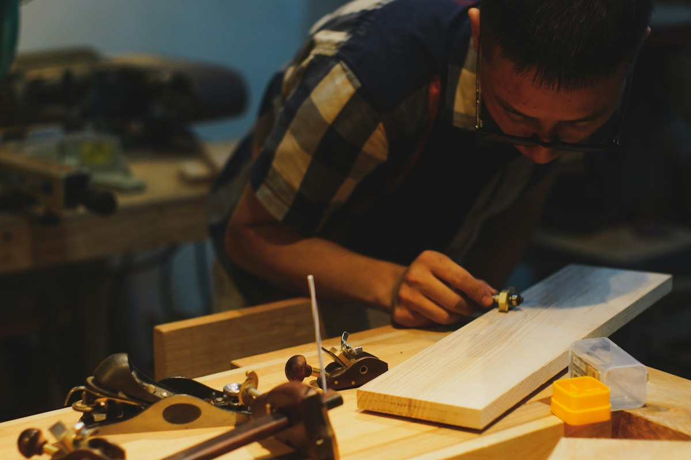
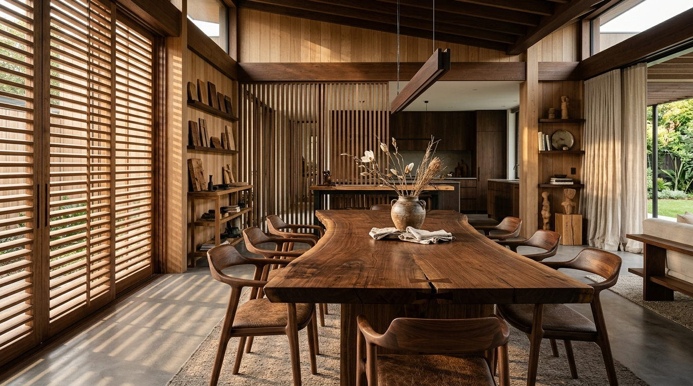

Gìn Giữ Hồn Gỗ Giữa Kỷ Nguyên Công Nghiệp Hóa
Giữa thời đại của những món đồ nội thất sản xuất hàng loạt bằng gỗ ép công nghiệp chỉ tồn tại được vài năm, Mộc Điền Atelier chọn con đường tĩnh lặng: dành hàng tuần lễ để người thợ cả chăm chút cho từng khớp mộng một tác phẩm duy nhất.

Nghệ Nhân Nguyễn Văn Thao
Thợ Cả 28 Năm Tuổi Nghề Làng Mộc Thạch Thất
Mộng Gỗ Là Khớp Nối Cơ Học, Nhưng Cũng Là Linh Hồn Của Tác Phẩm
Một chiếc đinh kim loại có thể giúp việc đóng một chiếc bàn hoàn thành chỉ trong vài phút, nhưng theo thời gian, kim loại sẽ rỉ sét, giãn nở nhiệt khác biệt với gỗ làm rách toác thớ sợi. Ngược lại, khớp mộng gỗ tự nhiên thở cùng nhịp điệu của mùa nóng, mùa lạnh, tạo nên một kết cấu bền vững qua hàng trăm năm.
Khi bạn chạm tay vào một chiếc bàn ăn Mộc Điền, bạn không chỉ chạm vào một mặt phẳng nhẵn bóng, bạn đang chạm vào công sức đục đẽo tỉ mỉ, mài giũa từng góc lượn công thái học của những nghệ nhân yêu nghề sâu sắc.
4 Tiêu Chuẩn Vàng Của Mộc Điền Atelier
1. Tuyển Chọn Gỗ FAS
100% gỗ nhập khẩu chính ngạch từ Bắc Mỹ & Châu Âu đạt tiêu chuẩn FAS (First and Seconds) — tiêu chuẩn phân loại khắt khe nhất thế giới về độ sạch vân, không giác mục, không khuyết tật tim gỗ.
2. Sấy Chân Không <10% MC
Gỗ được ủ và sấy chân không chậm trong buồng kín suốt 45 ngày để giải phóng triệt để ứng suất nội tại của thân cây. Giữ độ ẩm ổn định dưới 10% MC, loại trừ nguy cơ cong vênh nứt toác trong thời tiết nồm ẩm Việt Nam.
3. Khớp Mộng Gỗ 0 Đinh Vít
Mọi liên kết chịu lực từ chân bàn, đố ghế đến ngăn kéo tủ đều sử dụng mộng nêm, mộng đuôi én hoặc chốt nêm gỗ cứng. Kết cấu cơ học tự nhiên giúp đồ đạc có thể tháo lắp bảo dưỡng sau nhiều thế hệ.
4. Dầu Lau Thực Vật Osmo Đức
Tuyệt đối không phun sơn PU công nghiệp chứa formaldehyde độc hại. Chúng tôi bảo vệ gỗ bằng 3 lớp dầu lau thực vật hữu cơ Osmo (CHLB Đức) đạt chuẩn an toàn đồ chơi trẻ em EN 71.3, an toàn khi tiếp xúc trực tiếp đồ ăn.
Thăm Xưởng & Cảm Nhận Trực Tiếp Từng Mẫu Gỗ
Chúng tôi luôn mở cửa chào đón những người yêu gỗ ghé thăm xưởng chế tác tại Thạch Thất (Hà Nội) hoặc không gian trưng bày tại Khu đô thị Sala (TP.HCM). Tại đây, bạn có thể tự tay thử độ nhám của thớ gỗ sồi, ngửi mùi thơm tự nhiên của gỗ óc chó và chiêm ngưỡng các khớp mộng mẫu được giải phẫu thực tế.
